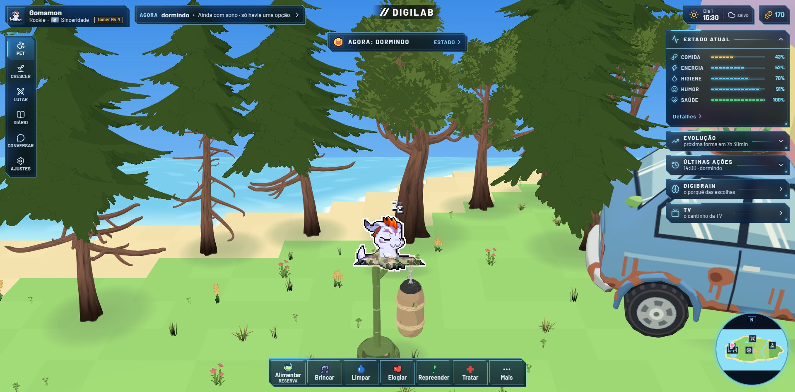
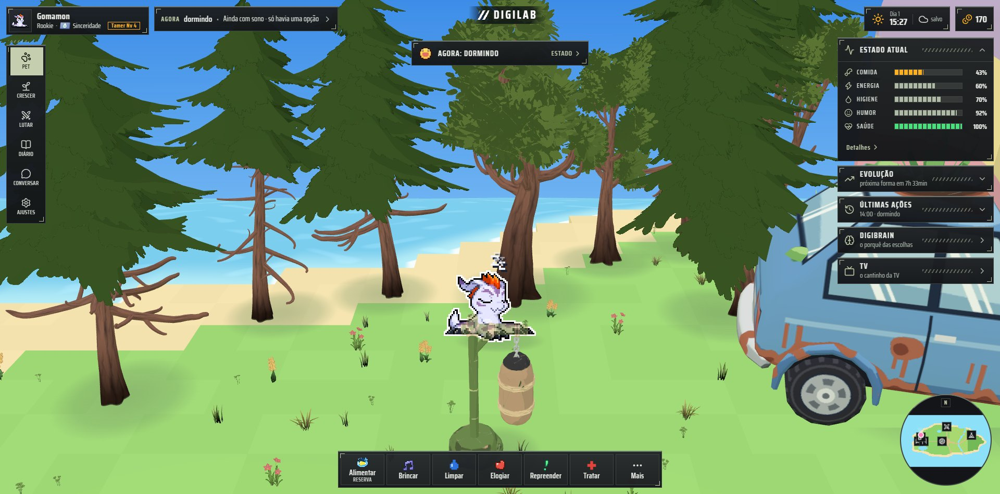
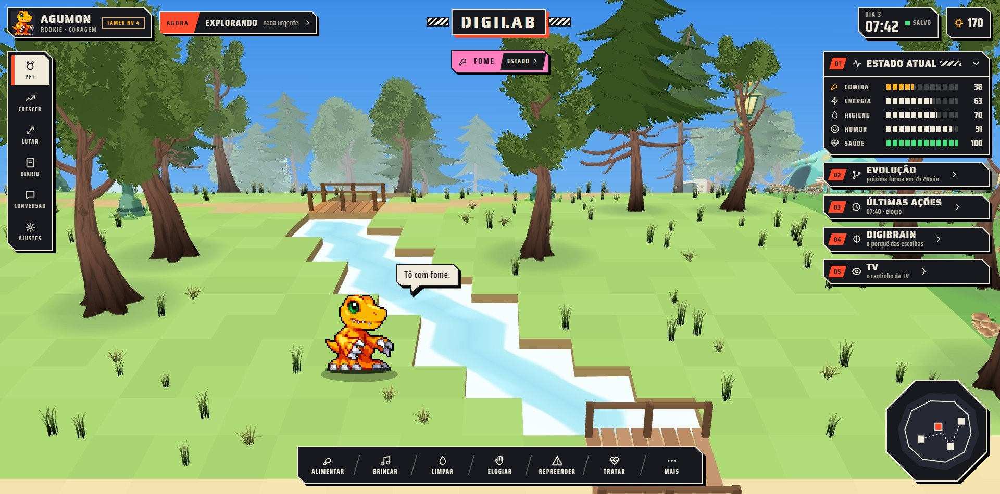
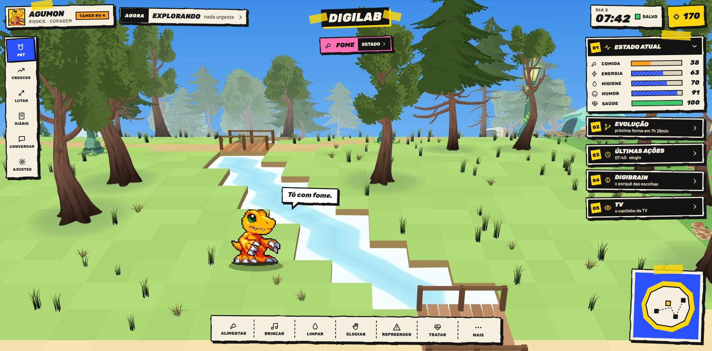
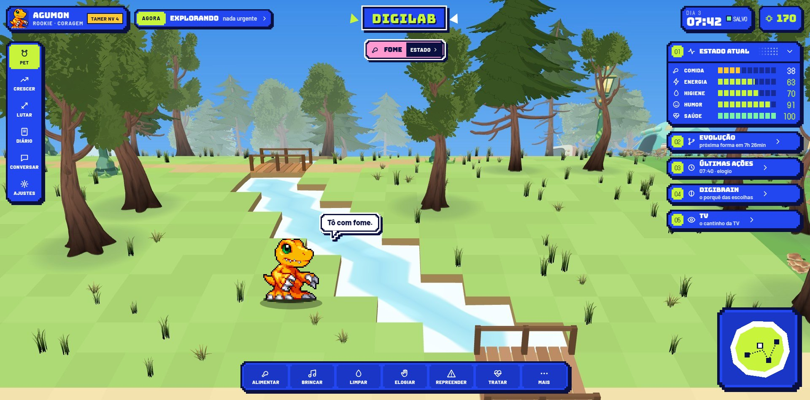

As peles lado a ladoo mesmo canto da tela do pet (o relógio e as janelas) e, embaixo, o cartão do pet e a linha do agora

Vidro (hoje)a pele padrão do jogo
Militar (hoje)a outra pele do jogo

1 · Estêncilcartaz de rua
2 · Zinecolagem de papel

3 · Arcadeadesivo e pixel